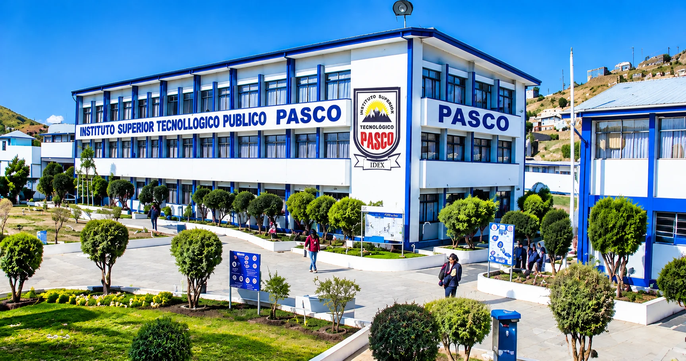

01
Misión
Democratizar el acceso a herramientas de diseño y fabricación digital en Pasco, formando capacidades técnicas avanzadas en la comunidad académica y emprendedora.
Fab Lab Pasco nace como un centro estratégico de fabricación digital en alianza con la formación técnica superior, convirtiendo ideas en prototipos reales de alto impacto local.

Ubicados en la sede del Instituto de Educación Superior Tecnológico Público Pasco, integramos equipamiento industrial de prototipado rápido con el talento de nuestros estudiantes, docentes e innovadores regionales.
Nuestro compromiso es impulsar el ecosistema maker a través de la manufactura aditiva, corte láser CNC y modelado computacional 3D.
Democratizar el acceso a herramientas de diseño y fabricación digital en Pasco, formando capacidades técnicas avanzadas en la comunidad académica y emprendedora.
Consolidarnos como el laboratorio de fabricación digital de referencia tecnológica en la región central del Perú para la innovación y transferencia de conocimiento.
Impresión 3D, corte y grabado láser CNC, desarrollo de prototipos electrónicos, mentorías técnicas y talleres prácticos abiertos.